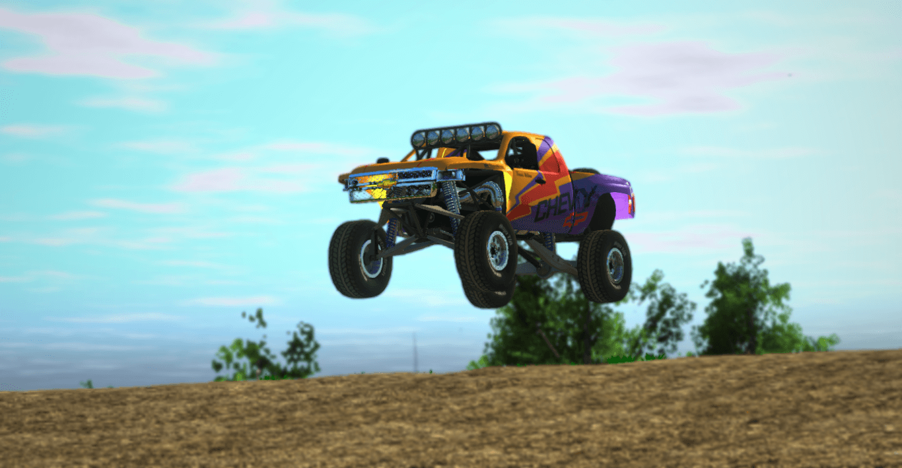

Brake early
Big vehicles need more room to stop.
Rigs of Rods
Rigs of Rods lets you drive trucks, cars, boats, and other vehicles with soft-body physics.
Download Rigs of Rods
Basics
Driving
Big vehicles need more room to stop.
Switch cameras when parking or hauling.
Crashes, jumps, and weird cargo setups are part of the fun.